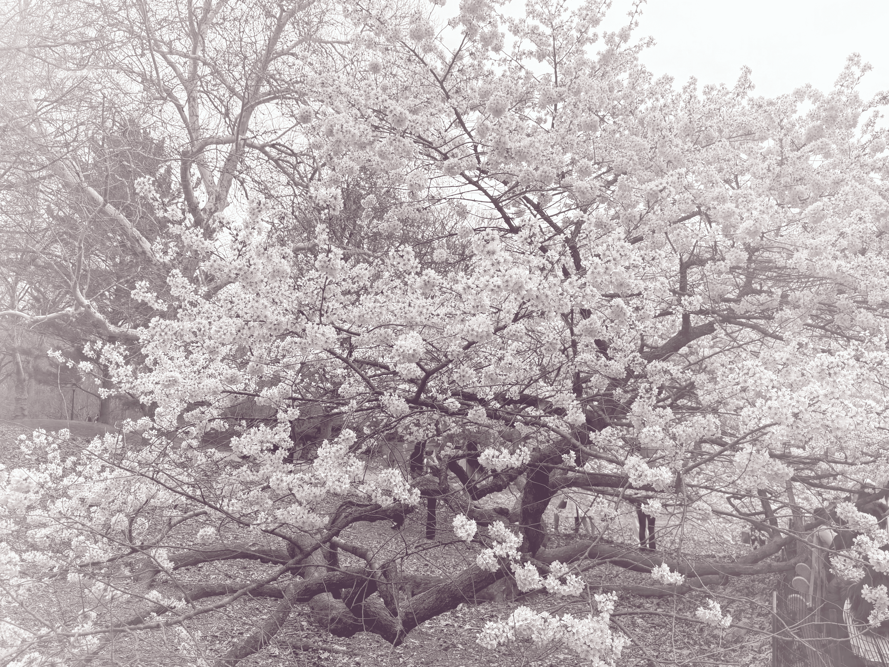
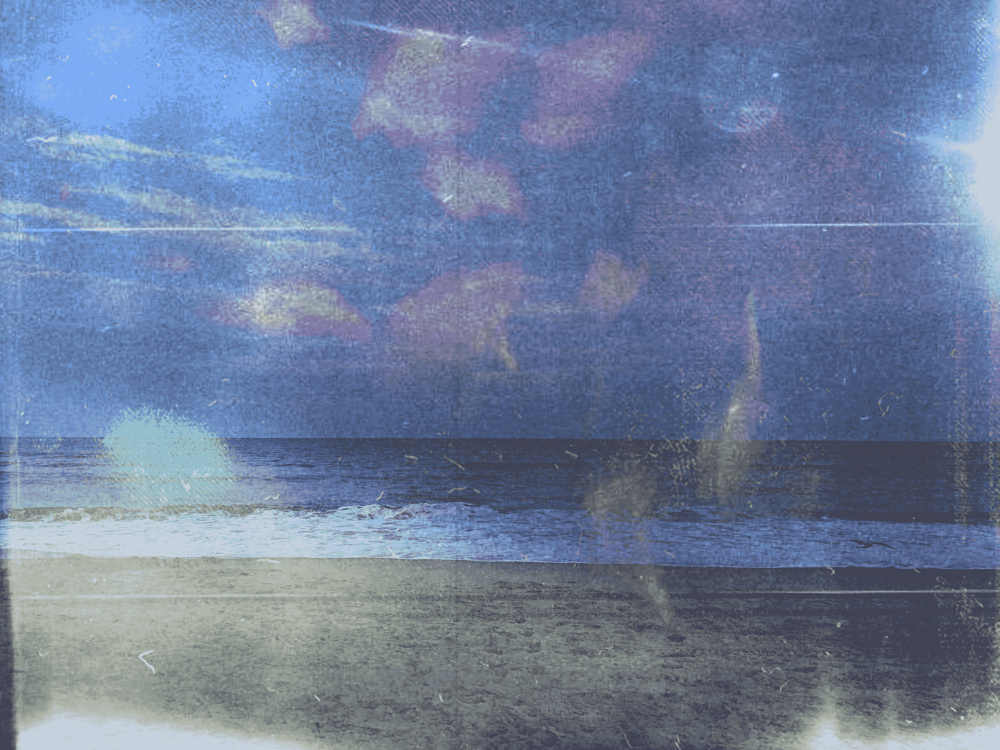
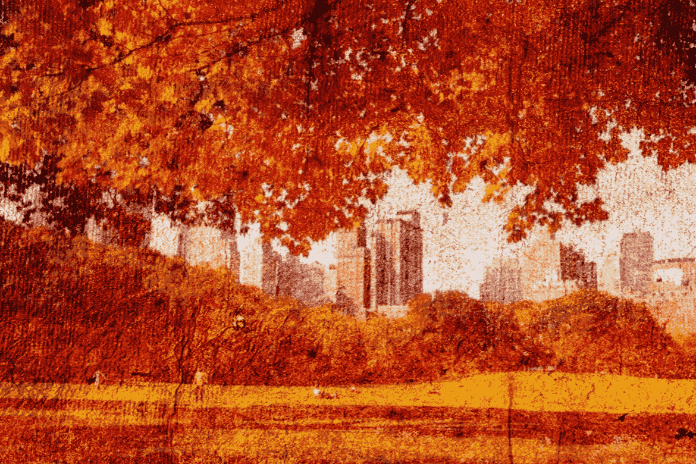
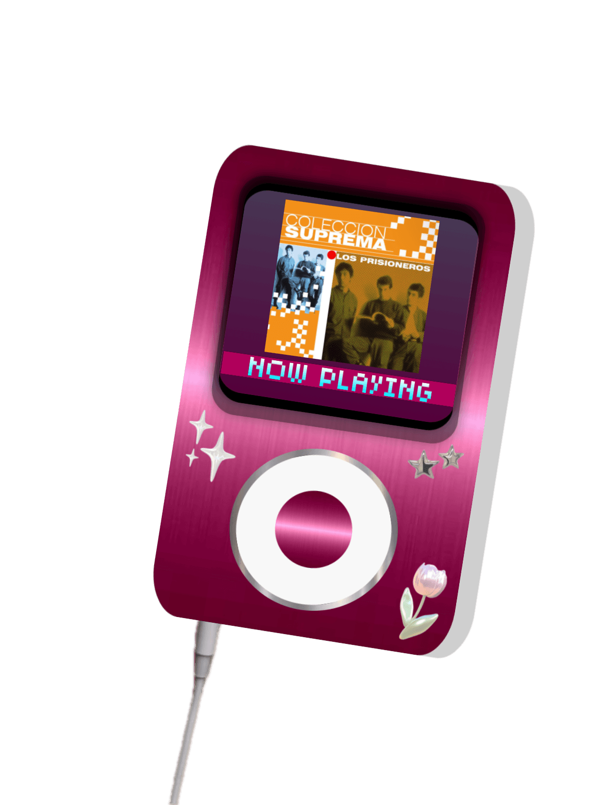
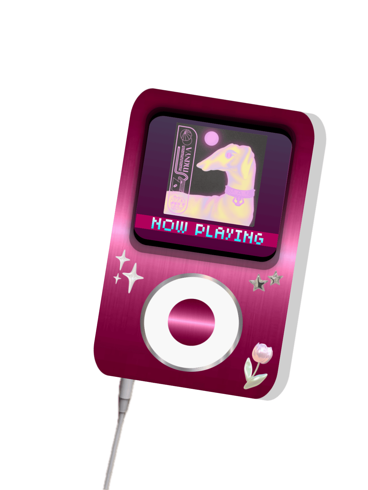
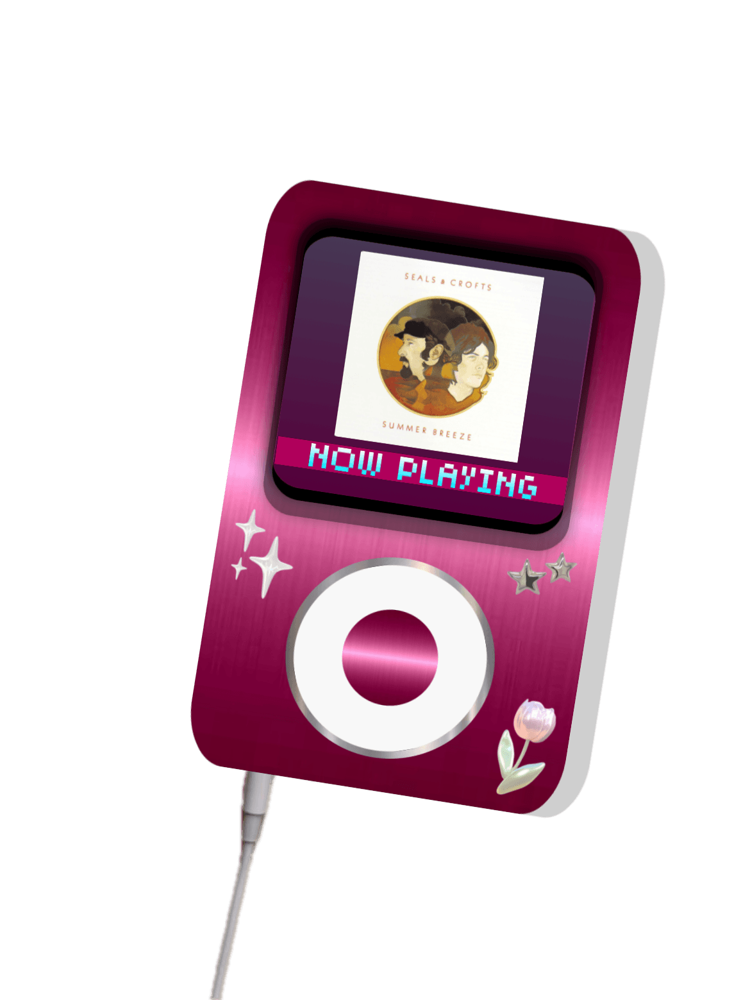
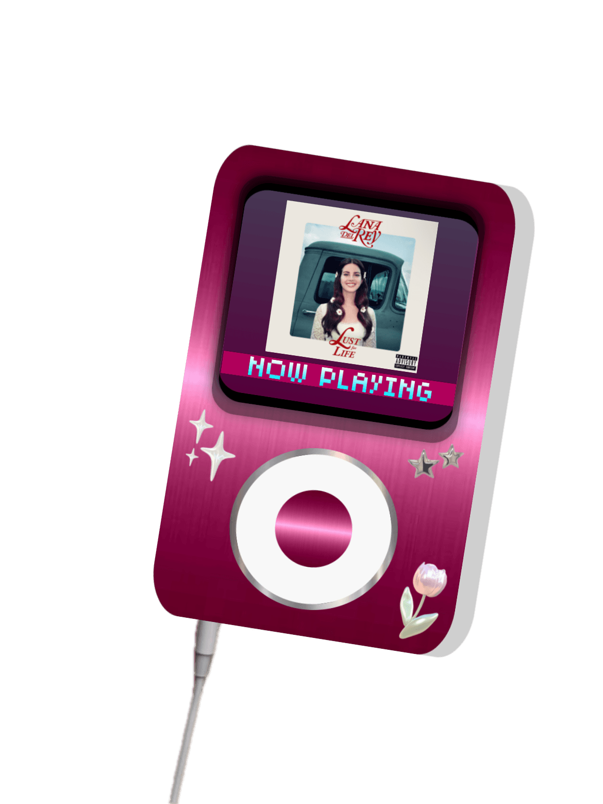

Tren Al Sur by Los Prisioneros: My most listened song in the beginning of the year. Every time I listen to this song, I get transmitted back to Mexico and remember how slow the time was, living in the moment, and small trips with my family around the countryside or city felt so healing. It was my first time traveling alone and I would do it again.
Boca Chica By MUNYA: I stumbled upon this song around march and i had a pretty memorable day. I had really good laughs with friends, watched a CUNY soccer match, and had a really good lunch near the met cloisters. This song is like millenial optimism for me.
Summer Breeze By Seals and Crofts: I had a amazing summer, went out with friends ALOT, went to montauk and explored together, ate really good food. I remember hearing this song on the road trip to montauk. My hair was blowing in the wind, smelling the ocean, and seeing the seagulls flying around.
Tomorrow never came by Lana Del Rey: I love Lana Del Rey already and I found this song as I was actively doomscrolling spiderman edits. I think the movie and this song are a perfect match. It is pretty melancholic but I feel like that's kinda fitting for fall. Second option was Mazzy Star's "Fade Into You" but I kinda listen to that song always. Fall, time for reflection and pumkin spice lattes.



